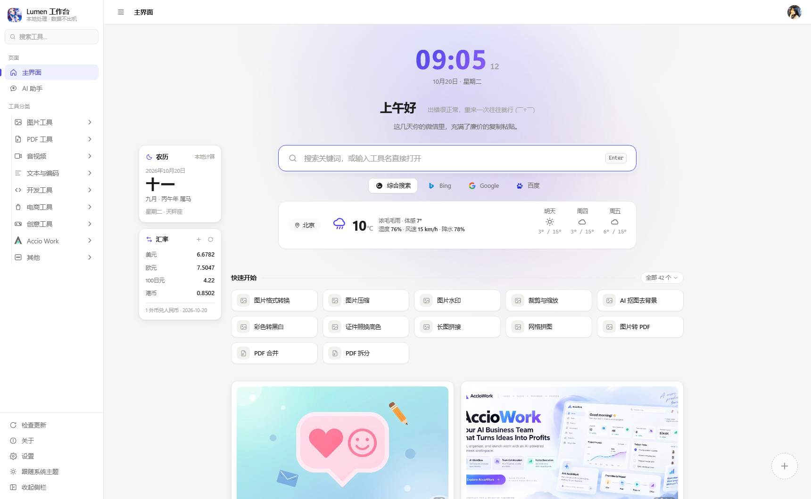
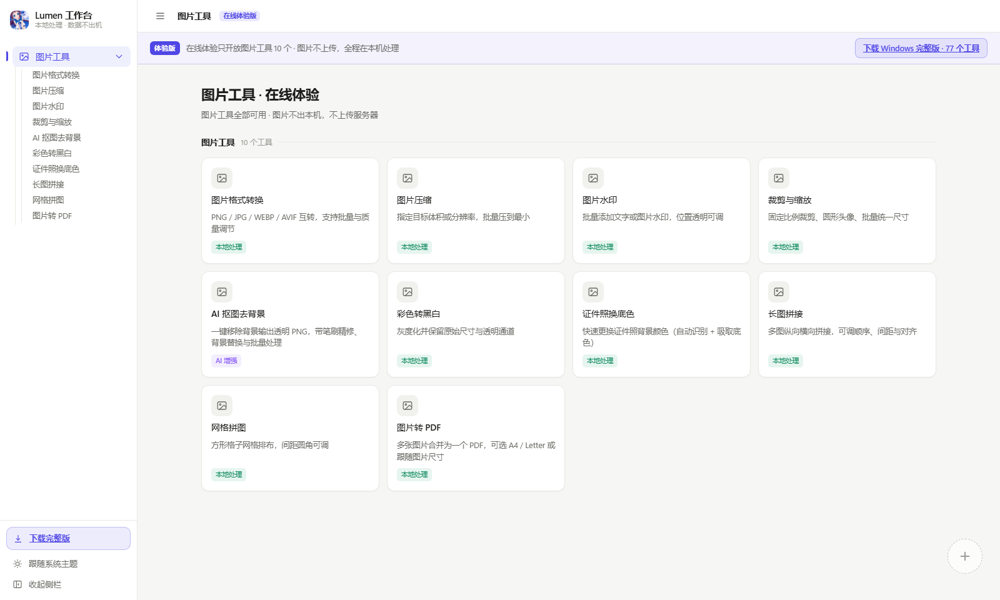
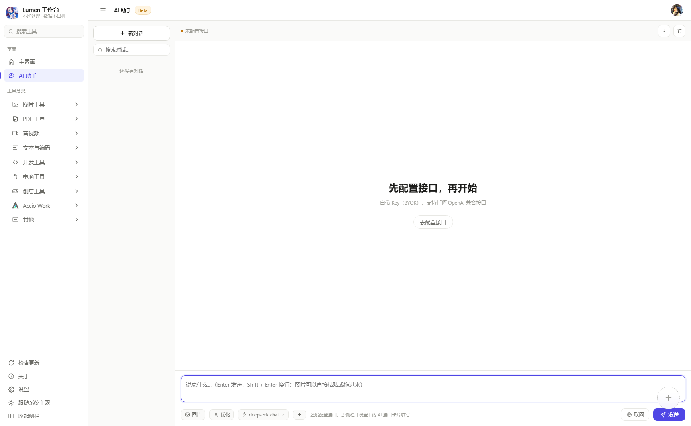

77 个常用工具 + AI 助手：图片、PDF、音视频、电商、开发……
全部在本机处理，数据不出机，不需要注册登录。
体验版只开放图片工具（10 个，全部可用）· 完整版下载后离线可用

浏览器里直接打开一个「迷你版 Lumen」：图片工具的全部 10 个功能原样可用—— 格式转换、压缩、水印、裁剪、AI 抠图、证件照换底、长图拼接、网格拼图、黑白、转 PDF。

体验版实拍常用的那一批已经实装，剩下的在按周补齐 —— 完整版里随时看到最新进度。
格式转换 / 压缩 / 水印 / 裁剪 / AI 抠图 / 证件照 / 拼接 / 转 PDF
10 个 · 全部可用合并 / 拆分 / 页面编辑 / 水印 / 骑缝章 / 压缩 / 提取文字
8 个 · 全部可用音频格式转换 / 视频转GIF / 音视频合成 / 提取音频 / 压缩 / 录屏
6 个 · 3 个可用批量重命名 / 音频转文字 / Markdown / 剪贴板历史
13 个 · 持续补齐二维码 / 取色器 / 本机信息
7 个 · 持续补齐违禁词检测 / 快递批量查询 / 利润定价 / 活动折扣测算
23 个 · 持续补齐中国象棋 / 斗地主 / 像素头像 / 随机抽签 / 番茄钟
3 个 · 全部可用表格清洗 / 会议纪要 / PDF 提取 / PPT 制作 等技能随 AI 助手调用
3 个 · 全部可用网页图片提取 / 二维码解码 / 友情链接
4 个 · 全部可用
AI 助手BYOK（Bring Your Own Key）：填入任意 OpenAI 兼容接口即可使用，没有中间服务器过手你的对话。
工具跑在你的电脑上，文件就不用出门。
图片、PDF、视频全在本机处理，断网也能用大部分工具。
没有账号体系，打开就是全部功能，没有配额也没有广告弹窗。
代码在 GitHub 上，做了什么一目了然，欢迎审阅与贡献。
AI 功能用自己的 API Key，直连模型服务商，不经过任何中间人。
体验版只开放图片工具的全部 10 个功能，用来快速感受交互与处理速度。完整版包含全部 79 个工具、AI 助手、桌面剪贴板历史、本机信息等桌面能力。
不会。体验版就是工作台本体裁剪出来的网页，图片处理全在你的浏览器里完成；AI 抠图用的模型也是页面自带的，识别同样在本机跑。
Lumen 本身免费，AI 功能自带钥匙（BYOK）：你在设置里填自己的 API Key，请求从你的电脑直连模型服务商，Lumen 没有中间服务器，也看不到你的对话。
目前只有 Windows。免安装 zip 版在 Wine 上有玩家跑通过，但不作承诺；网页体验版在所有现代浏览器都能用。
到 GitHub Issues 提交，或在工作台「主界面 → 意见反馈」里直接说。